The pixelizer
Turn your smooth 3D island into crisp, outlined, limited-palette pixel art — and learn every button, tab and slider that controls the look.

What you'll learn
- What the pixelizer is, and the three places in the editor where you control it.
- How to switch Pixel Preview and Animate on and off — and why the tutorial scene starts with Pixel Preview already on.
- Every setting of the
PixelRenderer: Renderer, Outlines, Color / Palette, God Rays, Debug Views. - Per-prop overrides with Pixel Object, plus the terrain's Grid / Fog overlays.
- The Pixel World panel: adding effects, Lighting Presets and Wire Sun / Env Refs.
- Palettes and baking a palette LUT, and the project-wide feature switches.
Roblox Studio always draws your Parts the same smooth way; you change the mood with Lighting and Post-processing objects. The pixelizer is a bit like a giant post-processing effect that redraws the whole camera view as retro pixel art. It never changes your models — switch it off and everything is exactly as you built it.
A few Godot words first
- Node
- One object in your scene — like an Instance in Roblox. A light, a camera, the terrain and the pixel renderer are all nodes.
- Scene tree
- The panel at the top-left listing every node, like Roblox's Explorer.
- Dock
- A panel docked around the edge of the editor, such as FileSystem or History (bottom-left).
- Inspector
- The panel on the right showing every property of the selected node, like Roblox's Properties window.
- Resource
- A reusable bundle of data saved as its own file (e.g. a palette). Think of it like a Roblox asset you can plug into several objects.
- 3D view / viewport
- The big picture of your world in the middle of the editor.
.tscn/res://- A
.tscnfile is a saved scene (like a Roblox place file).res://means "the project folder".
New to the editor layout? Godot for Roblox users tours it, and the glossary has every term.
The big picture: three editor surfaces
The pixelizer is driven by a PixelRenderer node. A family of other Pixel* nodes add the sky, weather, water and effects. You control them from three places, all only visible while the 3D tab (top centre) is open:
- The 3D-view menu bar — a strip at the top of the viewport with Pixel Preview, Animate, Pixel World and Roblox UI. Always visible.
- The left icon toolbar + the bottom strip — appear only while a
Pixel*node (or the terrain, for Grid / Fog) is selected. One icon per node family; the strip shows that family's settings, split into tabs. - The Pixel World panel on the right — a list of every pixel-node family with Select / + Add buttons, Lighting Presets and Wire Sun / Env Refs.
Click the numbered dots to tour the workspace:
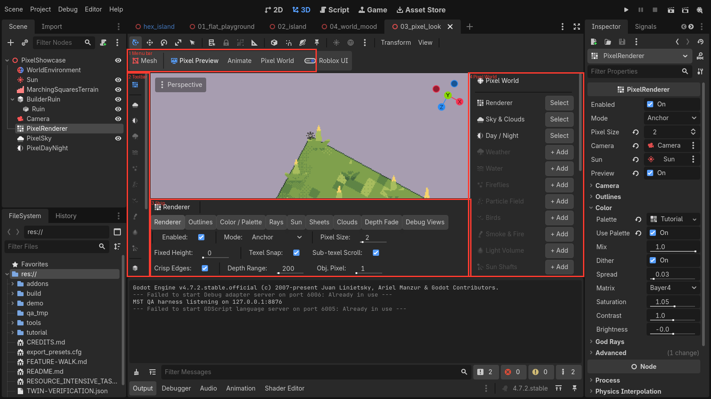
The left toolbar is like the tool groups on Studio's ribbon; the bottom strip is like the Properties panel but showing only the most useful settings; and the Pixel World panel is like Explorer → Insert Object, filtered to pixel effects.
The tutorial scene res://tutorial/03_pixel_look.tscn contains: PixelShowcase (the root) → WorldEnvironment, Sun (a directional light), MarchingSquaresTerrain, BuilderRuin (a PixelObject) with its child Ruin, Camera, PixelRenderer (pixel size 2, palette on), PixelSky and PixelDayNight. It has no weather, water or other effects, so those rows show + Add and their toolbar icons are dimmed.
Guided tutorial: your first pixel look
About 15 minutes. You'll flip the look on and off, make the pixels chunkier, play with outlines and the palette, add god rays, then undo it all.
- Open the scene. In the FileSystem dock (bottom-left) open
tutorialand double-click03_pixel_look.tscn. Make sure the 3D tab at the top is active. The view already looks pixelated — that's expected (see the warning below). - Find the menu bar. At the top of the viewport, on the row just below Transform / View, find Pixel Preview · Animate · Pixel World · Roblox UI.
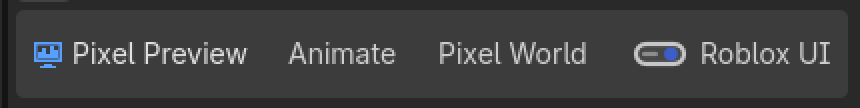
The 3D-view pixel menu bar. - Toggle Pixel Preview. Click Pixel Preview once: you see the raw, smooth scene with the editor grid and coloured axes. Click again to return to the pixel look (the clip in the menu-bar reference shows both clicks). Drag the divider below to compare.
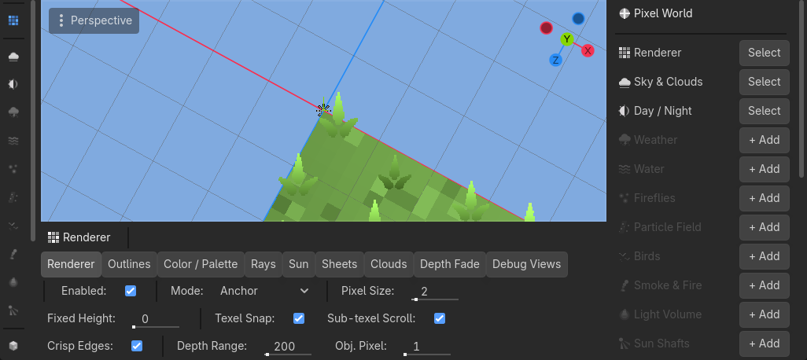
- Select the renderer. In the Scene tree click
PixelRenderer. The left toolbar, the bottom strip and the Pixel World panel appear. The strip opens on the Renderer tab. - Make the pixels chunkier. On the Renderer tab, drag Pixel Size to the right (or click it and type a number). Use the slider below to preview values 1 → 12.
- Try outlines. Click the Outlines tab and untick Outlines, then tick it again. Change Darken to see the edge get darker.
- Try the palette. Click Color / Palette, untick Use Palette: the sky turns bright blue and the greens go smooth. Tick it again.
- Add god rays. Click the Rays tab, tick God Rays, and raise Ray Alpha. Teal light shafts fall from the sun.
- Undo everything. Press Ctrl+Z repeatedly. Each change you made is one step in History (next to FileSystem, bottom-left).
Pixel Preview is ON the moment this scene opens. The scene's PixelRenderer has studio_prelook turned on, so the first click on Pixel Preview turns it off and reveals the raw smooth scene. That surprises everyone the first time.
Reference: the 3D-view menu bar
These four controls are always in the 3D view's top strip, even with nothing selected.
There is no picture of the Pixel World dropdown itself. Its contents are listed above; the right-hand Pixel World panel offers the same actions and is fully pictured.
Animate in action
Leave Animate off while sculpting or building on a slower computer — the editor stays much smoother. Turn it on only when you want to judge motion. With it off, the Sky and Day / Night look can lag behind a change until something redraws; turn Animate on or nudge any value to refresh. Your settings are always saved correctly — only the preview image lags.
How every strip field works
Every section uses the same few field types, so learn them once:
- Spin-slider (numbers): drag left / right to change, or click and type. One whole drag (grab → release) is one undo step. Decimal fields have a step size; whole-number fields step by 1; some are "or greater", meaning you can type past the slider's maximum.
- Checkbox for on/off, dropdown for choices, colour button that opens a colour picker.
- Hover any field for a tooltip: its label, the real property name (
Class.property) and its range. - Each change lands in History as
Set <Section> <Field>— e.g. "Set Renderer Pixel Size". Undo with Ctrl+Z, redo with Ctrl+Shift+Z. - The strip refreshes itself if the value is changed elsewhere (the Inspector, or an undo).
Same habit as Studio: Ctrl+Z undoes the last change. The difference is that the whole drag of a slider counts as one step, not every tiny tick along the way.
The renderer strip and its tabs
Select PixelRenderer (Scene tree, or Renderer → Select in the Pixel World panel). The strip's tabs are: Renderer · Outlines · Color / Palette · Rays · Sun · Sheets · Clouds · Depth Fade · Debug Views. Rays, Sun, Sheets, Clouds and Depth Fade are the five pages of the God Rays section.
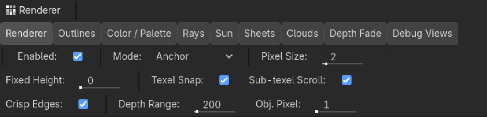
The left toolbar icon for a family is dimmed when no node of that family is in the scene; its tooltip tells you why (for example "no PixelWeather in the scene yet. Open it and press Add." or that it "needs a MarchingSquaresTerrain").
Reference: Renderer tab
The core of the look: how big the art pixels are and how the low-resolution image is built.
PixelRenderer.pixel_size).Enabled
activeMaster switch for the whole pixel renderer. Off = the scene renders normally.
Mode
modeAnchor runs the full pipeline (depth / normal outlines, palette, god rays). Low Res is colour only — cheaper, but no outline or normal pass.
- Options
- Anchor · Low Res
- Default
- Anchor
Pixel Size
pixel_sizeHow many screen pixels make one "art pixel". 1 ≈ full resolution; higher = chunkier. The headline knob.
- Range
- 1 – 16, or type higher
- Default
- 2
Fixed Height
fixed_heightLocks the internal render height to this many pixels (like always rendering at, say, 240 lines tall). 0 = work it out from Pixel Size.
- Range
- 0 – 1080
- Default
- 0
Texel Snap
texel_snapSnaps the image to the pixel grid so it doesn't shimmer when the camera moves.
- Default
- On
Sub-texel Scroll
subtexel_scrollScrolls smoothly within a pixel so slow camera pans don't look steppy.
- Default
- On
Crisp Edges
crisp_edgesKeeps hard pixel edges when the small image is scaled up (no smoothing).
- Default
- On
Depth Range
depth_rangeThe depth window used for outline detection and depth precision.
- Range
- 1 – 4000
- Default
- 200
Obj. Pixel
object_pixel_sizeThe default pixel size for Pixel Object props whose own Pixel Size is set to Inherit (−1).
- Range
- 1 – 16, or type higher
- Default
- 1
There's no Roblox equivalent of Pixel Size — the closest habit is lowering the graphics quality slider, except here the "low quality" is the deliberate art style and stays crisp.
Reference: Outlines tab
The renderer detects edges from depth (how far away things are) and normals (which way surfaces face), then draws dark silhouettes and crease highlights.
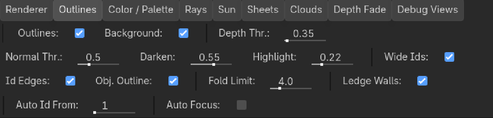
Outlines off vs on
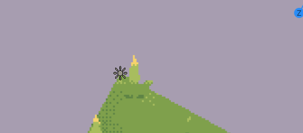
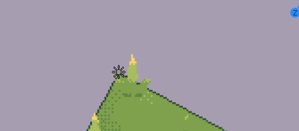
Darken 0 → 1
Outlines
outlinesMaster outline switch.
- Default
- On
Background
outline_backgroundAlso outline shapes against the sky / background.
- In this scene
- On
Depth Thr.
depth_thresholdHow big a jump in distance counts as an edge (silhouettes). Lower = more outlines.
- Range
- 0.0105 – 10
- Default
- 0.35
Normal Thr.
normal_thresholdHow sharp a change in surface angle counts as a crease edge.
- Range
- 0 – 2
- Default
- 0.5
Darken
outline_darkenHow dark the outline is: 0 = invisible, 1 = black. The strength knob.
- Range
- 0 – 1
- Default
- 0.55
Highlight
highlightA bright highlight on the lit side of a crease.
- Range
- 0 – 1
- Default
- 0.22
Wide Ids
extended_idsUses the extended range of outline ids (more distinct ids available).
Id Edges
id_edgesDraws edges where two objects with different outline ids meet. Needs the id pass (the Outline Ids feature).
Fold Limit
fold_limitSuppresses false creases on gentle folds below this amount, so smooth hills don't get scribbled lines.
- Range
- 0 – 20
- Default
- 4.0
Ledge Walls
ledge_wallsOutlines the terrain's ledge walls (the vertical cliff faces).
Auto Id From
auto_id_firstThe first id handed out automatically to objects for id edges.
- Range
- 1 – 253
- In this scene
- 1
Auto Focus
auto_focusAutomatically picks the focus object for id edges.
- In this scene
- Off
PixelOutlineColors (Inspector only)
PixelOutlineColors is a resource you assign on the renderer in the Inspector to colour outlines per outline id. It has no strip of its own.
| Property | What it does |
|---|---|
silhouette_colors | A list of colours, one per outline id, for silhouette edges. |
edge_colors | A list of colours, one per outline id, for inner edges. |
modulate_rows | On/off: tint rows by these colours. |
By default everything is neutral, except two ids used for Hover (yellow ) and Select (orange ).
Reference: Color / Palette tab
Snaps colours to a limited palette, adds ordered dithering (the checkerboard blend retro games use), and grades the colour.
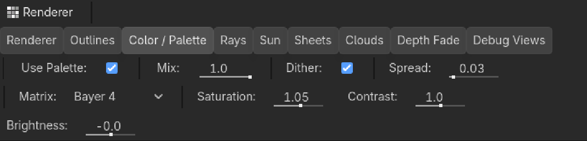
Use Palette off vs on
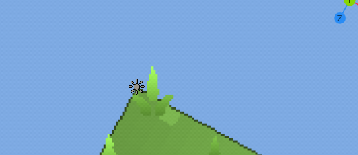
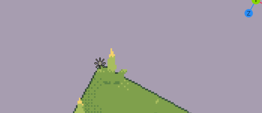
Mix 0 → 1
Use Palette
palette_enabledSnaps every colour to the assigned PixelPalette. Off = full colour.
- In this scene
- On
Mix
palette_mixBlends between original colour (0) and palette-snapped colour (1). The palette strength knob.
- Range
- 0 – 1
- Default
- 1.0
Dither
dither_enabledOrdered (Bayer) dithering between neighbouring palette colours — the fine checker pattern you see in the grass.
Spread
dither_spreadHow far dithering reaches between two palette colours. Higher = more checker pattern.
- Range
- 0 – 0.5
- Default
- 0.03
Matrix
dither_sizeThe dither pattern size: a 4×4 or 8×8 grid.
- Options
- Bayer 4 · Bayer 8
- Default
- Bayer 4
Saturation
saturationColour grade: how vivid colours are.
- Range
- 0 – 2
- Default
- 1.05 in this scene
Contrast
contrastColour grade: contrast.
- Range
- 0 – 2
- Default
- 1.0
Brightness
brightnessColour grade: brightness.
- Range
- −1 – 1
- Default
- 0.0
Saturation / Contrast / Brightness work just like Roblox's ColorCorrectionEffect in Lighting. The palette is the new part: it forces every colour into a fixed set, like painting with a limited box of crayons.
The PixelPalette resource and baking a LUT
The palette itself is a PixelPalette resource assigned to the renderer's palette property. In this scene it's the "Tutorial" palette (visible in the Inspector under Color → Palette).
Tints
tintsThe list of palette colours. Starts as a built-in set.
Source Image
source_imageRead the palette colours from an image instead of the Tints list.
Quantize Mode
quantize_modeHow "nearest colour" is measured when snapping. Changing it can recolour the whole scene even though the palette's colours stay the same — see the comparison below.
- Options
- Perceptual · Channel · Hue · HueWeighted · Lab · Value
- Default
- Perceptual
- Where
- Inspector only (Color → Palette → Quantize Mode) — not on the bottom strip
Weights
weightsThree numbers that only matter when Quantize Mode is HueWeighted: how much a difference in hue (x), saturation (y) and brightness (z) counts when picking the nearest palette colour. Raise x to keep colour families apart; raise z to keep light and dark apart. Default 1.0 / 1.0 / 1.0 (same as plain Hue); every other mode ignores them.
Brightness Curve
brightness_curveAn optional curve that reshapes brightness before snapping.
Lut Image
lut_imageImport a ready-made lookup table: a 1024×32 addon LUT or a 1024×1024 colour-cube chart.
Output Path
output_pathWhere the baked LUT PNG is written.
- Default
res://palette_lut.png
Bake LUT to PNG
Writes the palette's lookup texture to Output Path and refreshes the FileSystem. From the Tools menu: if no PixelPalette is selected but the selected renderer has one, that palette is baked; otherwise a warning is printed.
Quantize Mode: same palette, different picks
The palette is a fixed box of colours; Quantize Mode decides how the renderer picks "the closest one" for each pixel. Each mode measures closeness differently, so the same scene can come out quite differently. Slide through the six modes below — same camera, same palette, only the mode changes.
To change it: select PixelRenderer, and in the Inspector expand Color → click the Palette resource to open it → pick from the Quantize Mode dropdown. It lives on the PixelPalette resource, so you won't find it on the bottom Color / Palette strip.
Start with Perceptual (the default) and switch only if the result looks off — the mode is a one-click experiment, and Ctrl+Z brings the old one back. Reach for Value when you want a stylised, posterised look.
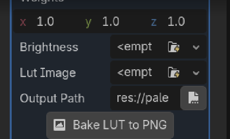
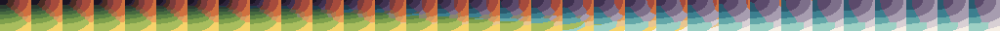
- Select
PixelRenderer. In the Inspector expand Color → click the Palette resource to open it. - Check Output Path (default
res://palette_lut.png). - Click Bake LUT to PNG — or use Project → Tools → Bake PixelPalette LUT to PNG.
- Find the new PNG in the FileSystem dock.
Want a palette from a reference picture? Drop an image into Source Image — the palette reads its colours from it.
Reference: God Rays (Rays · Sun · Sheets · Clouds · Depth Fade)
World-anchored sun shafts: stacked light "sheets" along the sun beam, lit through the gaps in the PixelSky clouds. The tooltip notes that Ray Alpha 1 is the default look.
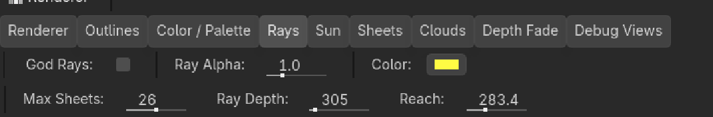
God rays off vs on
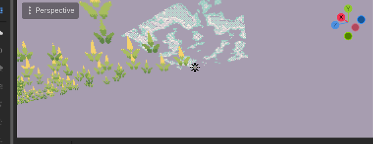
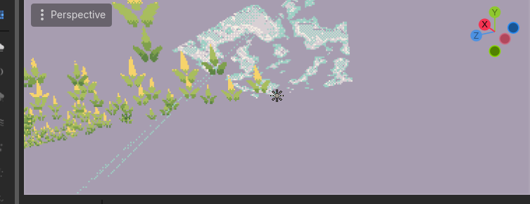
Ray Alpha
All of these pictures use one camera looking up toward the sun through the cloud gaps, so you can compare them directly. Don't worry if 0.5 looks almost like "off" — it is meant to be subtle; the beam builds up from 1 to 4.
God Rays
Turns the shafts on.
Ray Alpha
Shaft strength. The headline knob.
- Range
- 0 – 4
- Default
- 1.0
Color
beam_tintTint of the beam.
Max Sheets
The most light sheets stacked along a beam.
- Range
- 2 – 52
- Default
- 26
Ray Depth
How deep into the scene shafts are drawn.
- Range
- 1 – 4000
- Default
- 305
Reach
How far the shafts reach.
- Range
- 0 – 1000
- Default
- 283.4
Sun Color
Take the shaft colour from the sun.
Day Cycle
Follow the day / night cycle.
Dawn/Dusk
Dawn / dusk response.
- Range
- 0 – 1
Sun Follow
How closely the shafts follow the sun.
- Range
- 0 – 1
Bands
Number of light bands.
- Range
- 1 – 16
Gap
Spacing between sheets.
- Range
- 0.05 – 50
Energy
Brightness of each sheet.
- Range
- 0 – 10
Max Stack
Limit on how much overlapping sheets add up.
- Range
- 0 – 10
Falloff
How quickly sheets fade.
- Range
- 0 – 1
Surface Fade
Fades sheets near surfaces.
- Range
- 0 – 1000
Adaptation
eye_adaptationScales the sheet stack so side-on views keep distinct shafts instead of a milky veil.
- Range
- 0 – 10
- Default
- 1.6
Cloud Soft.
Softness of the cloud gaps the light passes through.
- Range
- 0 – 0.5
Cloud Occl.
How much clouds block the shafts.
- Range
- 0 – 1
Gap Erode
Shrinks the cloud gaps.
- Range
- 0 – 0.99
Start Depth
Distance where the shafts start fading.
- Range
- 0 – 100
Depth Fade
Length of the fade.
- Range
- 0 – 100
Depth Power
Shape of the fade curve.
- Range
- 0.05 – 8
Like Roblox's SunRaysEffect, but the shafts live in the world and pass through cloud gaps, rather than being a glow around the sun on screen.
The separate Sun Shafts node (added from the Pixel World panel) is a different effect owned by page 8. The God Rays pages here are built into the renderer.
Reference: Debug Views tab
One dropdown, View (debug_view), swaps the picture for one of the renderer's behind-the-scenes images. Handy when an outline appears (or vanishes) and you want to know why.
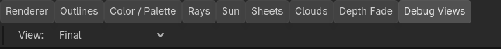
| View | Shows |
|---|---|
| Final | The normal finished image. |
| Normals | Which way each surface faces. |
| Depth | Distance from the camera. |
| Pixel Size | Which pixel size each part of the image uses (e.g. Pixel Object overrides). |
| Outline Ids | Each object's outline id as a colour. |
| Raw Color | The colour before palette and grading. |
| Outline Cause | Why each outline pixel was drawn: red = silhouette, blue = id edge, yellow = crease, green = suppressed fold / ledge. |
| Shafts | The god-ray shafts on their own. |
Slide through the views below. Every frame uses the same side-on camera: the terrain slope runs up from the lower left, with a row of plants on top against the sky.
Debug Views only change what you see — set View back to Final when you're done.
Reference: Pixel Object (per-prop overrides)
A PixelObject node wraps a prop and lets it look different from the rest of the scene — its own pixel size, outline or palette. In the tutorial scene, BuilderRuin is one.
Select BuilderRuin (the PixelObject), not its child Ruin. Selecting Ruin opens the Builder modelling tools instead — see page 10.
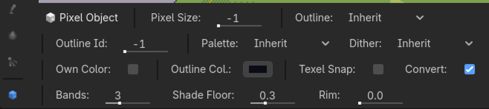
BuilderRuin, top row (Pixel Size · Outline) through Bands · Shade Floor · Rim.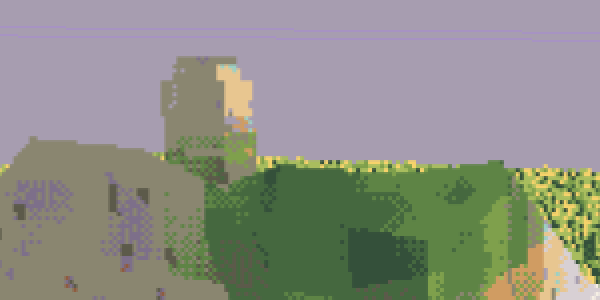
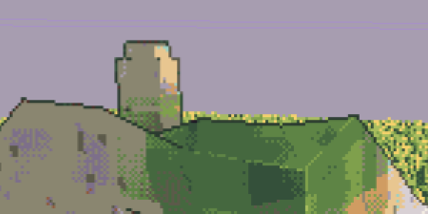
To get this: set the Pixel Object's Outline to On, and make sure the renderer's Obj. Outline (Outlines tab) is ticked.
−1 or Inherit means "use the parent PixelObject's value, or else the renderer's object defaults".
Pixel Size
This prop's own pixel size. −1 = Inherit (falls back to the renderer's Obj. Pixel).
- Range
- −1 – 16, or type higher
Outline
Force this prop's outline on or off.
- Options
- Inherit · Off · On
Outline Id
The outline id for id edges and outline colours. −1 = automatic.
- Range
- −1 – 253
- In this scene
- −1
Palette
Snap this prop to the palette or not.
- Options
- Inherit · Off · On
Dither
Dither this prop or not.
- Options
- Inherit · Off · On
Own Color
supersede_contour_tintUse this prop's own outline colour (below) instead of the default.
Outline Col.
contour_tintThe outline colour used when Own Color is ticked.
Texel Snap
Snap this prop to the pixel grid.
Convert
convert_materialsConvert the prop's materials to the pixel shading.
- In this scene
- On
Bands
Number of shading bands (toon steps) on the prop.
- Range
- 1 – 8
- In this scene
- 3
Shade Floor
How dark the darkest shading band can get.
- Range
- 0 – 1
- In this scene
- 0.3
Rim
Rim light strength on the prop's edges.
- Range
- 0 – 1
- In this scene
- 0.0
Alpha scissor / Profiles
alpha_scissor_threshold sets the cut-off for see-through pixels. profiles (a list of PixelObjectProfile) with profile_targets applies reusable overrides (below).
PixelObjectProfile
A reusable override you drop into a PixelObject's profiles list — like saving a "look" and reusing it on many props. It changes something only if at least one value differs from "inherit".
| Property | Range / default |
|---|---|
active | On/off, default on |
pixel_size | −1 – 16 |
outline | −1 (inherit) · 0 (off) · 1 (on) |
outline_id | −2 – 253 |
palette | −1 – 1 |
dither | −1 – 1 |
supersede_contour_tint | On/off |
contour_tint | Colour, default very dark navy |
A PixelObject is like grouping Parts into a Model and giving the Model its own Highlight — the settings apply to everything inside. A PixelObjectProfile is like a saved style you can paste onto other Models.
Reference: Grid / Fog (on the terrain)
Reached from the Grid / Fog toolbar icon or by selecting the terrain. These overlays live on the MarchingSquaresTerrain node: cell grid lines, fog of war and terrain debug views. The strip has two tabs, Grid and Fog of War.
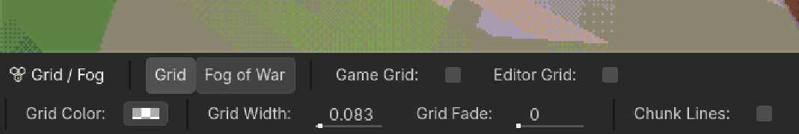
Game Grid
Show cell grid lines in the running game.
Editor Grid
Show cell grid lines in the editor.
Grid Color
Colour of the grid lines.
Grid Width
Line thickness.
- Range
- 0.0055 – 2
- In this scene
- 0.083
Grid Fade
Distance at which the grid fades out.
- Range
- 0 – 2000
Game Fog
Fog of war in the running game.
Editor Fog
Fog of war in the editor.
Fog Fade s
Seconds for fog to fade when revealed.
- Range
- 0 – 5
Fog Color
Main fog colour.
Fog Dither
fog_color_altSecond fog colour used in the dither pattern.
Hidden Dim
How much hidden areas are dimmed.
- Range
- 0 – 1
Hatch
Strength of the hatch pattern over fog.
- Range
- 0 – 1
Softness
Softness of the fog edge.
- Range
- 0 – 0.5
Debug View
Terrain debug overlays.
- Options
- Off · Slope · Height Contours · Slot Ids · Chunk Borders · Cell Ids · Cell Data
When this guide was tested, ticking Editor Grid did not visibly draw a grid in the pixel preview, even with a bright colour and a large width. The toggle and strip work; the visible grid may only show in the running game. That's why there's no before/after picture here.
The Pixel World panel
The panel on the right of the viewport lists every pixel-node family. Present families show Select; absent ones are greyed out with + Add.
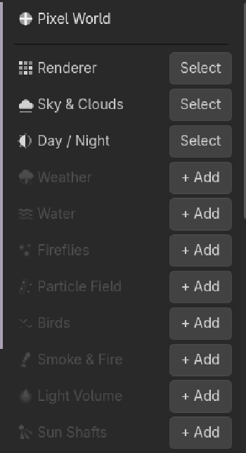
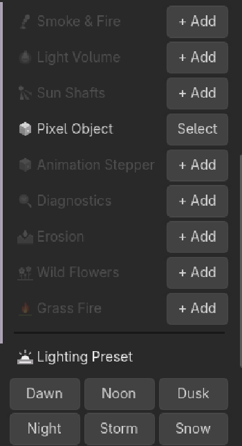
Effect rows
Renderer, Sky & Clouds, Day / Night, Weather, Water, Fireflies, Particle Field, Birds, Smoke & Fire, Light Volume, Sun Shafts, Pixel Object, Animation Stepper, Diagnostics, Erosion, Wild Flowers, Grass Fire. The left button (icon + name) selects the node, or cycles if there are several; a count like "(2)" shows when there's more than one.
Select
Selects that node (click again to cycle duplicates).
+ Add
Inserts the node with its sun / environment / camera references already wired. Undoable. Terrain-child families (Erosion, Wild Flowers, Grass Fire) need a terrain and are added under it. If the family's feature switch is off, it's turned on for you and a note is printed.
Lighting Preset
Applies a bundle of values to the scene's Day / Night, Sky, Weather and the renderer's god rays. One History step ("Apply Dusk preset"), undoable with Ctrl+Z.
Wire Sun / Env Refs
Fills empty sun / environment references on Sky, Day / Night, Weather and Sun Shafts — using the selected light / environment, or the ones other effects use. Undoable. Prints "Pixel World: wired N reference(s)."
Preview hint
Tells you whether Pixel Preview is on and what that means.
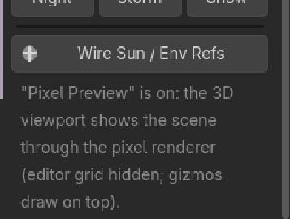
"wired 0" is good news. It means every sun / environment reference was already filled in — the tutorial scene comes fully wired — so there was nothing to do. You'd only see a higher number in a scene where some of those references were still empty.
Lighting presets
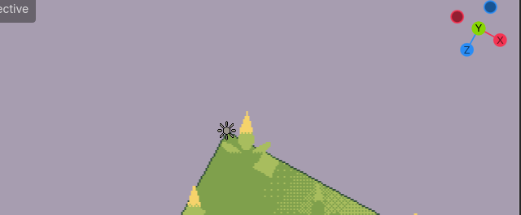
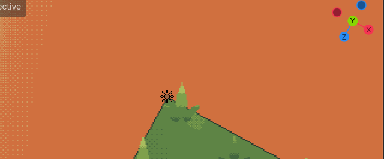
The Dusk look sticks for the rest of your editor session. Presets set some global sun / shader state that stays in the preview even after undoing, and even after reloading the scene. The saved settings are correct; only the picture stays dusk-orange. Restarting the editor clears it — so if you want to compare other looks afterwards, restart first. With Animate off, the sky can also look stale after an undo — turn Animate on or nudge a value.
Like setting Lighting's ClockTime, Atmosphere and Sky in one go. Studio has no "+ Add with everything wired" — here the new effect is hooked up to your sun and camera automatically.
Project feature switches
Project → Project Settings, type "features" in the filter, open Marching Squares Terrain → Features — or use Pixel World menu → Project → Features. Each checkbox compiles a whole feature in or out for the project. Turning one off makes that feature's nodes build and draw nothing; their settings are kept.
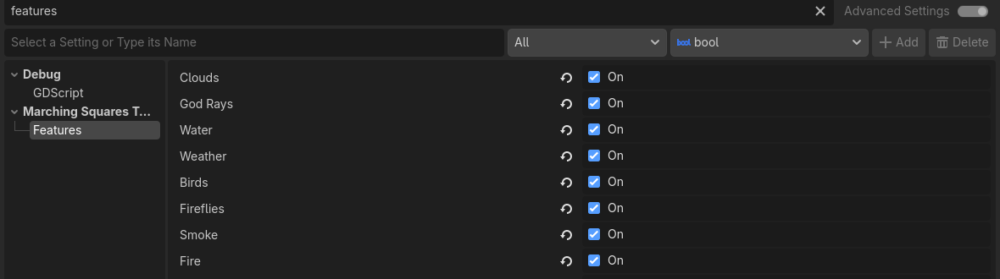
| Feature | Default | Feature | Default |
|---|---|---|---|
| Clouds | Off | Fireflies | Off |
| God Rays | Off | Smoke | Off |
| Outlines | On | Fire | Off |
| Outline Ids | On | Particle Fields | Off |
| Water | Off | Light Volumes | Off |
| Weather | Off | Sun Shafts | Off |
| Birds | Off | Grass | On |
Each item's tooltip names its cost and says it's saved in Project Settings. When you + Add a family whose feature is off, the plugin switches it on for you.
Like turning a heavy feature off for a whole place in Game Settings — except here it removes the feature from the build entirely, so it costs nothing.
Sky, weather, water and effects (page 8)
The other families in the toolbar and panel — Sky & Clouds, Day / Night, Weather, Water, Fireflies, Particle Field, Birds, Smoke & Fire, Light Volume and Sun Shafts — have their own strips that work exactly the same way. They're covered in full in Sky, weather, water & effects. Here's a quick look at the two that are already in the tutorial scene:
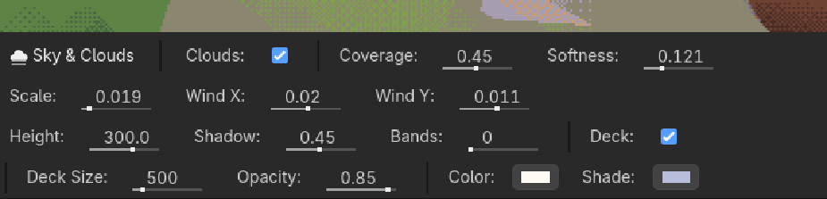
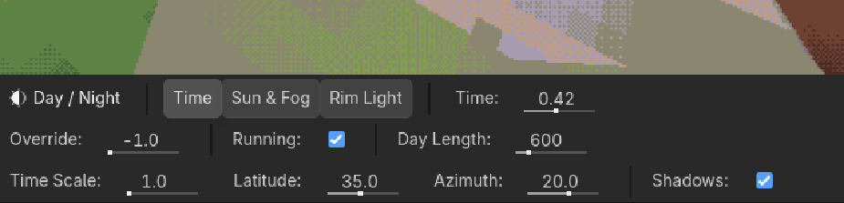
Recipes
- Renderer tab → Pixel Size 4.
- Outlines tab → Darken 1.0 for black outlines.
- Color / Palette → Matrix Bayer 4, raise Spread a little for more checker dithering.
- Pixel Size 1 or 2.
- Outlines → Darken about 0.3.
- Color / Palette → Mix about 0.66 to keep a hint of the original colours.
- Select the prop's PixelObject (e.g. BuilderRuin).
- Set Outline On, tick Own Color, pick an Outline Col..
- On the renderer's Outlines tab make sure Obj. Outline is ticked.
- Pixel World panel → Dusk.
- Rays tab → tick God Rays, Ray Alpha 2.
- Turn on Animate to see it move.
- Turn Animate off.
- Renderer → Mode Low Res if you only need colour while building.
- Or switch Pixel Preview off entirely while sculpting.
Not sure why an outline is there? Debug Views → Outline Cause. Red is a silhouette (try Depth Thr.), yellow a crease (try Normal Thr. or Fold Limit).
Check yourself
You open the tutorial scene and click Pixel Preview. The pixel look disappears. Why?
The scene's renderer has studio_prelook on, so Pixel Preview starts on. Your first click turned it off.
Which knob makes the art pixels bigger, and where is it?
Pixel Size on the Renderer tab of the PixelRenderer strip.
You want the original colours back without losing the palette entirely. What do you change?
Lower Mix on the Color / Palette tab (0 = original colours, 1 = fully palette).
You clicked BuilderRuin's child "Ruin" and got modelling tools instead of the Pixel Object strip. What should you click?
The parent BuilderRuin — that's the PixelObject.
Related pages
- Sky, weather, water & effects — every effect family listed in the Pixel World panel.
- Greyboxing with the Roblox UI — the Roblox UI toggle in the same menu bar.
- Modelling: faces, edges & vertices — what opens when you select Ruin.
- Chunks, settings & saving — chunk lines and project settings.
- Troubleshooting & FAQ.